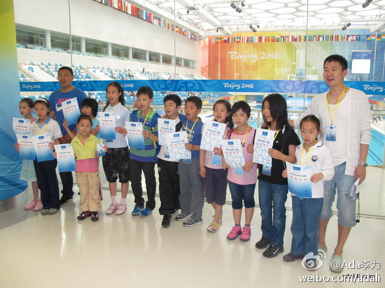

《正在爆发的营销革命》的序写得不错，是PayPal公司做开发者营销的Dave MaClure, 原来是geek, 转型前对传统的营销一无所知，但他干得不赖，事实上，他认为他成功得很大原因在于打乱，调整，甚至是破坏企业营销得正常规则，以便做需要做的事情。参考：网页链接
参加游泳比赛的小朋友都有证书，获奖证书或者是成绩证书。基本获奖人数能占四分之一。姣姣拿了个儿童组蛙泳50米丙组的第三名，成绩是57秒。最右边的就是之前提过的那个帅哥游泳教练了，据小朋友说，教练现正在节食减肥。而妈妈们说是因为教练没结婚，所以要保持形象。我是多么地八卦啊。 
办活动的借鉴下。//@CSDN:值得推荐！//@CSDN移动: 最近的各种沙龙确实越来越多了，但是不少都很水，炒概念、软广告、例行凑数的现象比较多。开发者和程序员在众多的活动中，比较难以做出取舍。会后吐槽的现象更多了起来。无论是开发者还是办会方，这篇文章还是挺值得推荐圈内的人读一读的。@Q张宁:开发者会议分类方式可说是不胜枚举，这点初步由英文对会议名称的写法就可看出端倪。Hackathon、Hack Day、Unconference、MashPit、BarCamp、FooCamp、DevCon、BootCamp、Game Jam、Code Jam、Open Day、Coding For Fun、Guest in Town等。你是否能说出他们之间的区别和渊源吗？ 网页链接
《钢铁侠》中就有不少Oracle的身影，Larry还在电影中露了个脸，截取片断制成的宣传片还蛮好看，活动中放一放很有气势。 不知道这个《复仇者联盟》能不能超越。另外，一张电影票太少了啊，谁会一个人去看电影呢？@家常咖啡 @程序媛 @ACOUG中国@甲骨文中国:#甲骨文与《复仇者联盟》#一场由六大超级英雄携Oracle家族五大高手的抵御入侵地球之战已经上演，赶快邀请好友一起关注！转发此微博并@三位好友，既有机会赢取由甲骨文中国提供的《复仇者联盟》电影票一张！与甲骨文一起关注软硬一体的集成设计带来的的独特魅力！（仅限北京地区，周四揭晓幸运者）
//@1968金鹏远:#每日热帖# 但凡不是营销号发出来能转发无数的一定是日常生活的意料之外情理之中的观察，并且最NB的是还可以给后续者无限可以继续扯淡的机会，比如说有人就补充上，等都删除完毕我上去按下ctrl+s@法鲨D推一美K:我朋友在在Royal Holloway的图书馆里看到一个中国人赶论文赶睡着了，然后额头刚好按在了退格键上，然后就看着他在熟睡的过程中慢慢的删掉了自己的论文……

 网页链接
网页链接